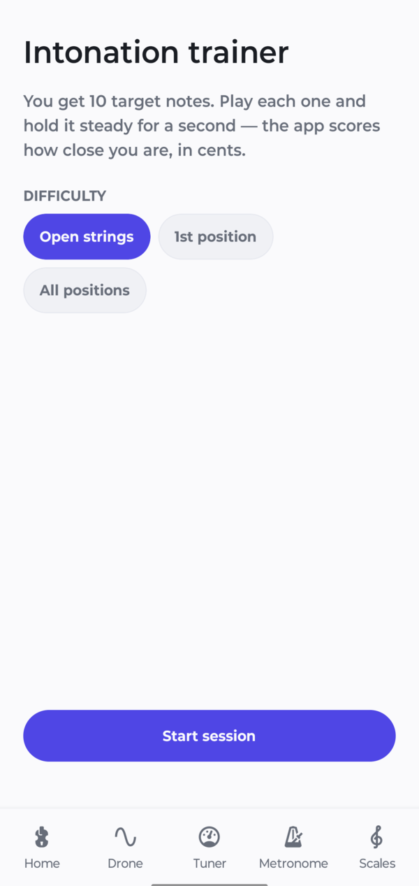
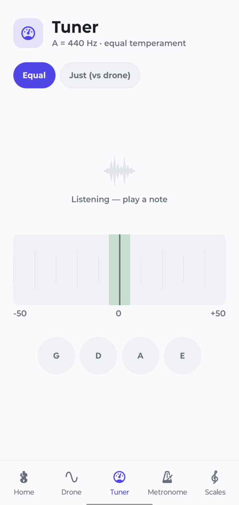
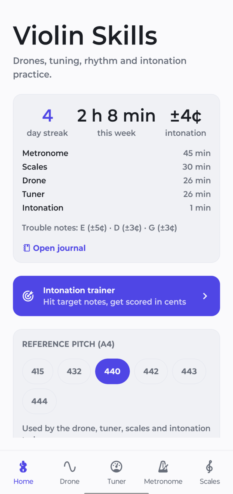
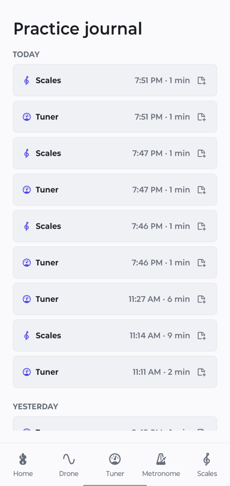

12 roots · octaves 2–5
Drone
A soft bowed-string timbre with a slow breathing swell, optional perfect fifth, and one-tap open strings. Keeps sounding with the screen locked.
Android · free · no account
A drone, tuner, metronome and scale library in one app — plus an intonation trainer that scores every note in cents, so you can see the drift your ear lets through.
A direct download, because it is not on Google Play yet — Android will ask once for permission to install it.
Play the drone to tune against, or turn on the microphone to read what you are playing.
What is in it
Set the reference pitch once — anywhere from Baroque 415 to a sharp 444 — and the drone, tuner, scales and trainer all follow it. The drone and the metronome run at the same time, because that is how you actually practise.
12 roots · octaves 2–5
A soft bowed-string timbre with a slow breathing swell, optional perfect fifth, and one-tap open strings. Keeps sounding with the screen locked.
A = 415–444 Hz
Reads the note you are playing and lets the needle settle instead of twitching at every bow wobble. Equal temperament, or just intonation measured against the drone.
30–240 BPM
Dead on the beat however long you leave it running — no creeping drift. Tap tempo, time signatures, subdivisions and accented downbeats.
6 scale types
Major, three minors and both arpeggios, in every key across two octaves. The note you are playing lights up as you play it, with the tonic drone one tap away.
10 notes · scored in ¢
Ten target notes per session. Hold each one steady for a second and get graded on accuracy and steadiness — open strings, first position, or the whole fingerboard.
Logged automatically
Time per tool, day streak, intonation trend and the notes you keep missing — recorded as you practise. Nothing to fill in afterwards.
The part other tuners skip
A tuner tells you about the note you are playing right now. It cannot tell you that your F♯ has been eight cents flat all week. The trainer gives you ten targets, measures each one against the reference you chose, and keeps the result — so the pattern shows up in the journal instead of in a lesson.
Indistinguishable from in tune. This is the target.
Audible to a trained ear, especially against a drone.
Clearly off. Worth stopping and re-placing the finger.



Practice journal
Every tool logs its own time. The home screen shows the streak, the week broken down by tool, the latest intonation score and the pitches you keep missing. There is no form to fill in and nothing to remember to start.

Private and open
A practice app listens to you for hours. This one does all of it on the device, and you can check that claim yourself — the source is public.
Microphone audio is analysed in memory to find the pitch and then discarded. It is never written to disk or sent anywhere.
Nothing to sign in to, and your practice history stays on your phone. The only thing the app ever sends is a check for a new version.
Nothing tracks which tools you use or how long you practise, except the journal on your own device.
Free software. Read it, build it, change it, or fork it — see the repository.